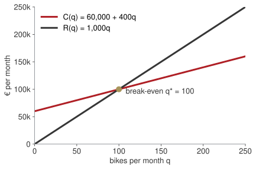
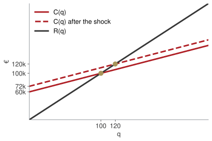
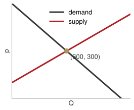
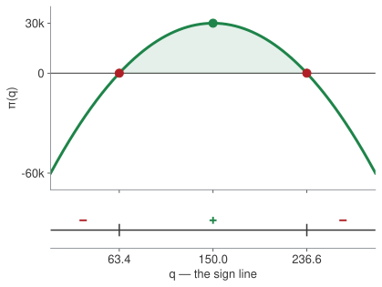

Week 1 · Thursday 24 September 2026 · 10:00–13:00
MBA03 Research & Quantitative Business Methods · European School of Economics, Florence
| Wk | Date | What you will be able to do by hand |
|---|---|---|
| 1 | 24 Sep | equations, systems, quadratics, logs |
| 2 | 1 Oct | read a function; limits; the derivative |
| 3 | 8 Oct | study a function; optimise; integrate |
| 4 | 15 Oct | interest, discounting, NPV |
| 5 | 22 Oct | bonds, duration, convexity; mock exam |
Two things count.
Midterm (25%): a report to a Board built on the study of a cost, a revenue and a profit function. Due 1 Nov.
Final exam (75%): 3 hours, paper, calculator. One of five questions is pure calculus: integrals, limits, recovering a function from its derivative.
Every technique in this room is here because one of those two asks for it. I will tell you which one, every time.
Same form as the final, different numbers:
\int \frac{x^{5} - 3x^{3} + 2}{x^{2}}\,dx \lim_{x \to 1^{+}} \frac{(x-1)^{2}}{x - x^{2}} f'(x) = 6x^{2} - 2x,\quad f(1) = 4 \;\Rightarrow\; f(x) = ?
Today we do none of this. Today we make sure that when we get there, the algebra underneath — dividing term by term, factoring, solving for an unknown, handling a log — is not what slows you down.
Everything today is a question the founder of a small firm actually has to answer.
| e-bike assembler, Florence | |
| Fixed cost | €60,000 per month (rent, salaries, insurance) |
| Variable cost | €400 per bike (parts, packaging) |
| List price | €1,000 per bike |
Four questions from the founder, one per block:
A. How many bikes before I stop losing money? · B. How many bikes should I make? C. How long until revenue doubles? · D. Is this battery cell within spec?
Bet before we compute
Write a number. Do not compute yet.
Two facts, written as two functions of the monthly quantity q:
C(q) = 60{,}000 + 400\,q \qquad\qquad R(q) = 1{,}000\,q
Break-even is where they meet: R(q) = C(q).

1{,}000\,q = 60{,}000 + 400\,q 600\,q = 60{,}000 q^{*} = \frac{60{,}000}{600} = 100
Reading. €600 is the contribution of each bike. Break-even is fixed cost ÷ contribution.
LAB · session.ipynb § A
Watch the slope and the intercept separately. Only one of them moved.

Same slope (€400 per bike), higher intercept.
New break-even: 1{,}000q = 72{,}000 + 400q \Rightarrow q^{*} = 120.
The midterm asks how a tariff on an input changes the cost and profit schedules. That is this picture with different names: a per-unit tariff changes the slope, a lump-sum cost changes the intercept.
Buyers in Tuscany: Q_d = 1200 - 2p. Sellers: Q_s = -300 + 3p.
Bet before we compute
What price clears the market?
Substitution 1200 - 2p = -300 + 3p 1500 = 5p p^{*} = 300, Q^{*} = 600
Elimination Q + 2p = 1200 Q - 3p = -300 subtract: 5p = 1500
Picture

Board sentence
One equation is one fact about the business. Two unknowns need two facts. Write the facts as equations before touching a number.
PAPER · drills.md
10 minutes. Show all work, exam style. Tutor circulates.
The founder learns: at €1,000 she sells 150 bikes; every €4 cut sells one more.
p(q) = 1600 - 4q
Revenue is price × quantity: a rectangle whose sides pull in opposite directions.
Bet before we compute
Does selling more always bring more revenue? Yes / no, and roughly where it stops.
Clip rendered with manim from anim/src/week01_scenes.py.
R(q) = (1600 - 4q)\,q = 1600q - 4q^{2} \pi(q) = R(q) - C(q) = -4q^{2} + 1200q - 60{,}000
Where is profit zero? First move, always: divide out the common factor.
q^{2} - 300q + 15{,}000 = 0 q = \frac{300 \pm \sqrt{300^{2} - 4\cdot 15{,}000}}{2} = \frac{300 \pm \sqrt{30{,}000}}{2} \approx 63.4,\;\; 236.6
| b^{2} - 4ac | roots | in business |
|---|---|---|
| > 0 | two | a profitable window |
| = 0 | one | a single break-even |
| < 0 | none | no viable scale |
Where is profit positive? A downward parabola (a<0) is positive between its roots:
63.4 < q < 236.6

The sign line. In the midterm it is called “the sign of the profit function”.
LAB · session.ipynb § B
Vertex of \pi(q) = -4q^{2} + 1200q - 60{,}000:
q_{v} = -\frac{b}{2a} = -\frac{1200}{-8} = 150 \qquad \pi(150) = 30{,}000
This formula works for parabolas only.
Next week you get a tool that finds the top of the hill for any curve — a log revenue, a cubic cost, anything. It is called the derivative, and it is the reason this course exists.
Board sentence
A quadratic has two roots, one, or none, and the discriminant tells you which before you compute. In business: a profitable window, a single break-even, no viable scale.
PAPER · drills.md
10 minutes. Show all work, exam style. Tutor circulates.
R(t) = 1.2 \cdot 1.12^{\,t}
Linear growth adds the same amount each year. Exponential growth adds the same percentage.
Bet before we compute
How many years to double? Write a number.
Clip rendered with manim from anim/src/week01_scenes.py.
1.2 \cdot 1.12^{\,t} = 2.4 \quad\Longrightarrow\quad 1.12^{\,t} = 2
No algebra so far reaches t. That is what a logarithm is for: it answers “to what power?”
\ln\!\left(1.12^{\,t}\right) = \ln 2 \;\Longrightarrow\; t\,\ln 1.12 = \ln 2 \;\Longrightarrow\; t = \frac{0.6931}{0.1133} \approx 6.1 \text{ years}
| rule | reading |
|---|---|
| \ln(ab) = \ln a + \ln b | growth factors multiply, their logs add |
| \ln(a/b) = \ln a - \ln b | a ratio of revenues becomes a difference |
| \ln a^{k} = k \ln a | k years of the same growth: the exponent comes down |
| \log_{b} x = \ln x / \ln b | any base through the calculator’s \ln |
t_{\text{double}} \approx \frac{70}{g_{\%}} \qquad\qquad \frac{70}{12} \approx 5.8
Why it works: \ln 2 \approx 0.69 and \ln(1+g) \approx g when g is small, so t = \ln 2 / \ln(1+g) \approx 0.69/g.
The number e \approx 2.718 appears today only as “the base your calculator’s \ln uses”. In week 4 it becomes continuous compounding and earns its place.
Board sentence
Whenever the unknown is in the exponent, take logs of both sides. Whenever you see a log, remember it is a question: to what power?
PAPER · drills.md
12 minutes. Show all work, exam style. Tutor circulates.
Battery cells must be 500\,\text{Wh} \pm 15. A supplier ships one at 483 Wh.
Bet before we compute
In or out? Then write the rule as one inequality.
|c - 500| \le 15 \;\Longleftrightarrow\; 485 \le c \le 515 \;\Longleftrightarrow\; c \in [485,\,515]
|x-a| is the distance from a. “\le b” is the closed interval [a-b,\,a+b]; “> b” is the two tails x<a-b or x>a+b. Square bracket: endpoint included. Round bracket: excluded, or \pm\infty. The exam asks for domains written exactly like this.
PAPER · drills.md
8 minutes. Show all work, exam style. Tutor circulates.
One of you stands up. The other is the Board.
Tell them, with numbers and no formulas:
The Board asks one question. This is a rehearsal of the midterm’s oral.
Homework 1 (homework.md), due Wednesday 30 September 23:59 on Moodle: eight drills on paper + a 150–250-word memo to the Board on the profitable window.
Write your own three take-home lines now, before you leave.
Research & Quantitative Business Methods · ESE Florence